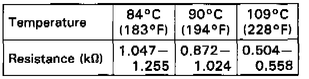

Radiator Cooling Fan Temperature Sensor / Switch: Testing and Inspection
Coolant Temperature Switch Test1. Remove the coolant temperature switch from the radiator.
Fig. 17 Coolant temperature switch test. Legend:

2. Suspend the coolant temperature switch in a container of coolant as shown.
3. Heat the coolant and check coolant temperature with a thermometer.

4. Measure the resistance between the A and B terminals according to the table.
5. If unable to obtain the above readings, replace the temperature switch.